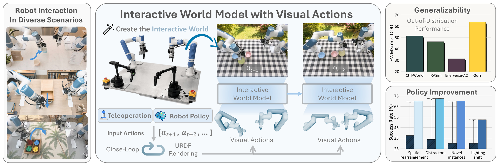
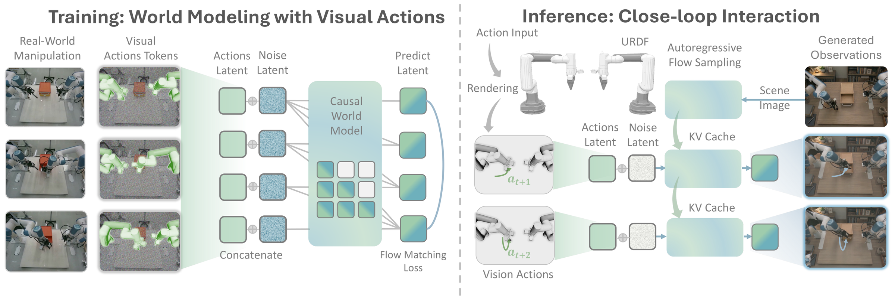
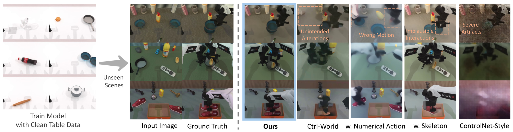
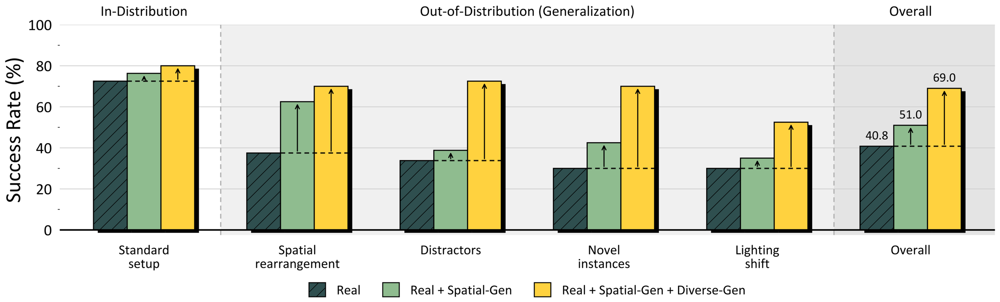

Generalist robot policies exhibit strong capabilities, but their robustness in complex and unseen environments remains limited. Scaling robot learning and evaluation in diverse real-world environments remains costly and challenging. Action-conditioned world models offer a promising alternative, but they often suffer from limited action controllability and poor generalization to out-of-distribution (OOD) scenarios. To this end, we present GeniWorld, an interactive world model for robots that generalizes robustly across unseen scenarios. Building on pretrained video generative models, we use URDF-based rendering to transform numerical actions into visual action representations, enabling spatially grounded action control. By explicitly decoupling embodiment kinematics from environmental dynamics, our model mitigates scene overfitting and facilitates modeling of robot-environment interactions. To achieve closed-loop control, we construct an autoregressive video prediction model integrated with high-frequency robot kinematic control, enabling interaction with both robot policies and human teleoperators. In our experiments, even when trained solely on limited fixed-scene data, our model achieves superior in-domain performance and robust zero-shot generalization to highly randomized, unseen environments. For downstream applications, GeniWorld serves as a scalable policy evaluator that remains reliable under environmental perturbations. Furthermore, even with limited real-world demonstrations, GeniWorld generates diverse manipulation trajectories within the world model, improving downstream policy performance and robustness in complex environments.


